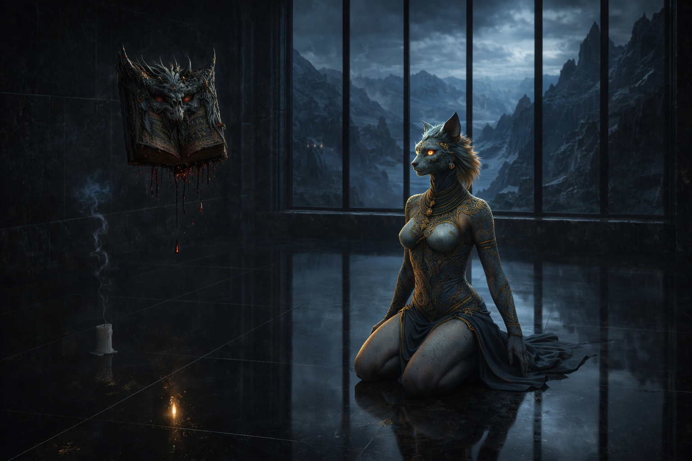

From a single spark to a living universe. Every step taken, and every step still to come.
The Nyfurion saga began with the first 100 fragments. Each one a unique piece of the universe, where digital art and storytelling became one, and the world made its first contact with the public.
Fragments were released in waves, growing to 400 unique pieces. Quality and vision held firm, while the story began to live on social media through teasers, visuals and updates.
The universe deepened with new female characters, iconic locations and the ruins of a fallen city. Every promise made to the community was kept, every fragment enriched the myth.
Some fragments conceal secret evolutions, revealed slowly over time. A gentle face may hide a dark soul; a minor piece may become central. This is a living lore, never fully predictable.
A fragmented collection of 100 unique NFTs, a narrative branch tied to the main saga. Once minted, the story continues, with new fragments, evolutions and revelations to come.
The first book opened the world to everyone, even those new to crypto. Holders can now shape the lore with their own ideas, becoming a voice in Nyfurion's fate.
A clear, transparent license defines what holders truly own and can create. Legal clarity, real trust, full creative freedom within the world.
The ultimate goal: bring Nyfurion to television and streaming. Every fragment is a potential spark of the story, and holders whose fragment appears on screen share in its success.
Nyfurion opens its gates to artists, brands and creators. Holders can build real ventures, merchandise and stories from their fragments, giving the world value far beyond the digital.
You are early. Step into the world now, and help shape what Nyfurion becomes.
Read the Saga Choose Your Side